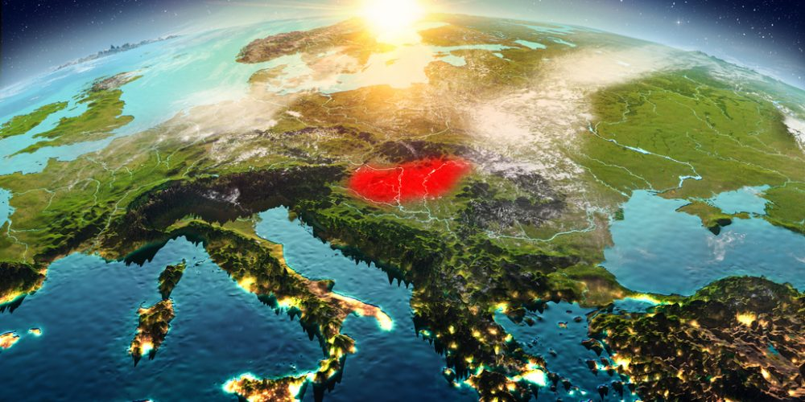

Magyarország kirándulás szempontjából változatos földrajzi adottságának köszönhetően számtalan festői túrahelyet rejt. Kirándulásunk célja lehet túrázás a hegyekben és erdőkben, kilátók végigjárása vagy várak meglátogatása. Hazánk bővelkedik mindezekben a látnivalókban! Szervezett kirándulásaink keretein belül nagyszerű élményekkel gazdagodhattok, hiszen számos izgalmas programmal készülünk számotokra és olyan eldugott helyeket is megmutatunk, amelyek a nagy nyilvánosság számára nem ismertek. Válogathattok, hogy éppen gyalog, vízen vagy két keréken szeretnétek bejárni a hazánk legszebb tájait. Kezdve az egynapos kirándulásoktól a többnapos utakig.
